Pivot
The pivot view of your transaction totals and/or budget totals, for the selected periods or dates, in the Ledger analyser / Ledger analyser 2.
Pivot feature is available for all of the report types in the Ledger analyser.
Pivots, by default, summarises the totals for the Income and Expense (Income statement) accounts and Capital, Assets and Liabilities (Balance sheet) accounts for which budget figures were entered, and/or transactions in batches and documents were processed, for the selected report type and period or dates.
The pivots allows you to sort, group, filter and drill down customise datasets and types of graphs.
Pivot feature is also available for Budgets (accessed from the Reports ribbon), view graphs, filter, drill down, customise datasets.
|
|
Pivots only includes batch and document transactions which are posted. Unposted batches and documents will be NOT be included in pivots. To view a list of unposted batches and documents, which is not updated to the ledger, go to Input → Checking unposted items (Default ribbon). |

Generating Pivot tables
To view the Trial balance figures in the Pivot table in the Ledger analyser:
- On the Ledger analyser 1 or Ledger analyser 2, select the Income statement, Trial balance or Balance sheet report type. In this example, the “Trial balance” is selected.
- Select the Period or dates on the Free selection tab. In this example, the “2 Months” from “1 March 2022” to “30 April 2022” is selected.
- Click on the Report button.
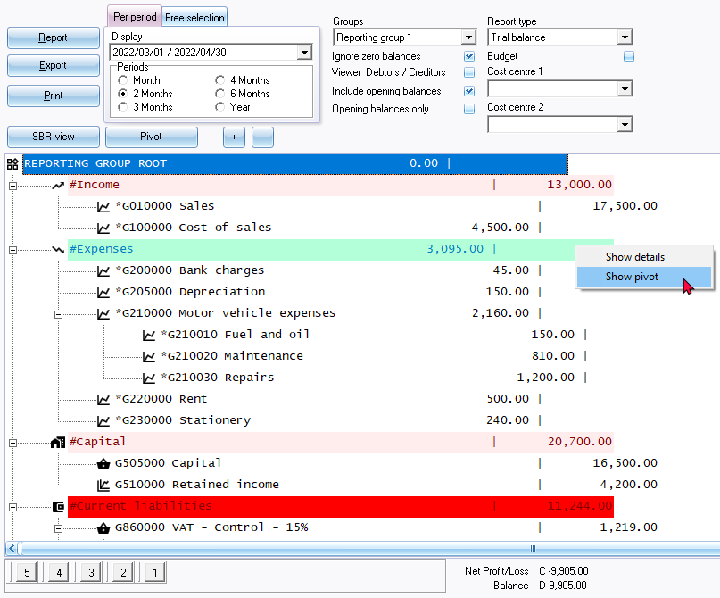
|
|
Buttons 5, 4, 3, 2 and 1 at the bottom of the report - is shortcut keys to the last accessed T-Account viewer options or Pivot options. These shortcuts will be cleared when you close active forms, or when you open the Set of Books. |

- Click on the Pivot button. The “Trial balance” figures for the selected period is displayed:
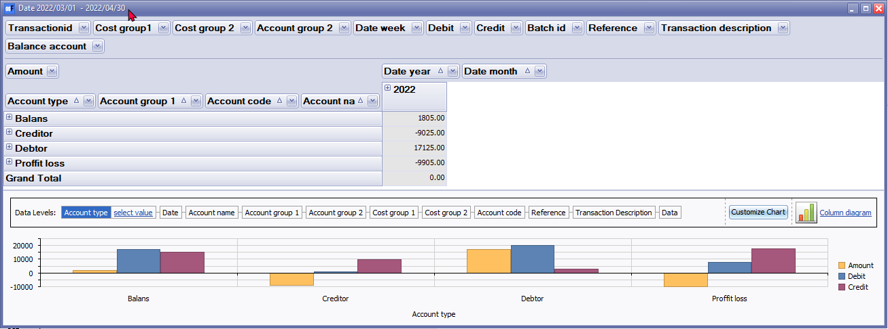
|
|
You may click on any graph to display the graph for the next available data level fields. The cursor will be displayed as a magnifying glass and move to the next dataset. In this example, "Account type" is selected.
Move over graph area will display the values, e.g. "Profit / Loss - Credit is 17500" and “Amount for profit loss is -9905”. |

- Click on the icon to Profit loss to list the totals for the Income and Expense account types (e.g. Income and Expenses financial categories) for the selected period or dates. The icon will change 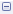 to list totals for each financial category (i.e. Income and Expenses).
|
|
You may right-click to launch the context menu, and select the following options: 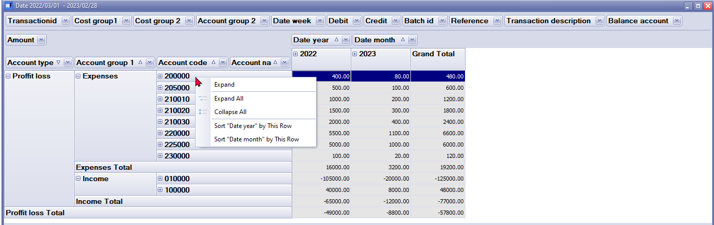 |
- Once the available columns are expanded, the Pivot table for the “Trial balance”, according to the selected options, should be displayed as follows:
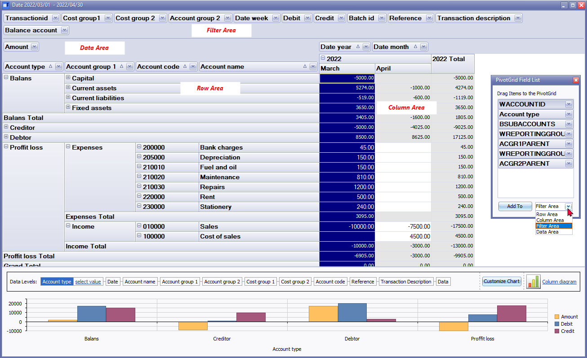
Default filter options
The default filter options, which may be selected as needed, is structured on the Pivot screen in four (4) areas, "Filter Area, Column Area, Row Area" and "Data Area". The filter options is as follows:
Filter Area:
- Transaction id – The transaction id is automatically generated for posted transactions in batches and documents.
- Cost group 1 – If Cost centres 1 is selected in batch transactions and selected on documents, the Cost centres for Cost centre 1 will be listed.
- Cost group 2 – If Cost centres 2 is selected in batch transactions and selected on documents, the Cost centres for Cost centre 2 will be listed.
- Account group 2 – The groups set for Account group 2 in Setup → Groups (Setup ribbon) and linked to Accounting group 2 in Setup → Accounts (Setup ribbon).
- Date week – The number of the week (from 1 to 53) for a calendar year.
|
|
In this example, March 2022 and April 2022 will be listed as week 9 to 14. Week 1 to 8 is for January 2022 and February 2022, which is not included in this Financial year (1 March 2022 to 28 February 2023) as no transactions were posted in weeks 1 to 8. |

- Debit – The debit amounts.
- Credit - The credit amounts.
- Batch id – The batch id is auto generated for posted transactions in batches and documents.
- Reference – The “Reference” is as follows:
- Documents – Document number as generated when creating documents.
|
|
In this example, and most database templates, the document numbers are prefixed with alpha characters, i.e. IN000001 = Invoices, CR000001 = Credit notes, PU000001 = Purchases and SR000001 = Supplier returns. |
- Batches – The reference as entered the “Reference” column of Batch entry screens.
|
|
The reference of Balancing entries in batches is indicated with eight (8) asterisks “********”. |
- Transaction description -
- Documents – The document type (i.e. Invoice, Credit note, Purchase and Supplier returns) and the reference as entered in the “Your reference” field on “Document entry” screens, will be listed.
|
|
COST OF SALES/Your reference – These are the Cost of Sales transactions generated for Invoices and Credit notes on which the stock items, default stock item type and other stock item types supporting cost of sales, were processed. |
- Batches – The description of the transaction entered in the “Description” column of Batch entry screens.
- Balance account – The values, are as follows:
- 0 = Income and Expense (Income statement) accounts.
- 1 = Ledger accounts set as Balance sheet account type. These Capital, Assets and Liabilities accounts are reported on the Balance sheet.
Data Area:
- Amount - The total debit amounts will be listed. Credit amounts (prefixed by a - (minus sign)) will be listed.
Row Area:
- Account type – Lists all account types for the “Trial balance”, and is as follows:
- Balans – Lists all accounts linked to the “Balance sheet” in the “Account type” field of Setup → Accounts (Setup ribbon). The “Balance sheet” accounts which is linked to the “Capital”, “Assets” and “Liabilities” financial categories will be listed.
- Creditor – Lists all accounts added in the Creditor (Default ribbon).
- Debtor – Lists all accounts added in the Debtor (Default ribbon).
- Proffit / Loss – Lists all accounts linked to the “Income statement” in the “Account type” field of Setup → Accounts (Setup ribbon). The options is as follows:
- Income – The “Income statement” accounts which are linked to the “Income” financial category will be listed.
- Expenses – The “Income statement” accounts which are linked to the “Expenses” financial category will be listed.
- Account group1 – List the Groups 1 linked to accounts added in Setup → Groups (Setup ribbon) as follows:
- Balans - Balance sheet accounts linked to Account group 1.
- Creditor – Creditor accounts linked to Creditor group 1.
- Debtor – Debtor accounts linked to Debtor group 1.
- Proffit / Loss – Income and Expense accounts linked to Account group 1.
- Account code – All accounts will be listed by Account code.
- Account name – The description (name of the account).
Column Area:
- Date year – The transaction totals will be displayed only for the year which was selected on the “Per period” tab of the Ledger analyser options. In this example only 2022 will be listed, since March 2022 and April 2022 were selected.
|
|
If a full financial year, for example, 1 March 2022 to 28 February 2023 is selected and transactions were processed for January 2022 and February 2022, the 2022 and 2023 years will be available. The transaction totals will be listed for each calendar year. For example, if your financial year starts on 1 January 2022 and ends on 31 December 2022, only one (1) financial year will be listed, e.g. 2022. In this example, the financial year starts on 1 March 2022 and ends on 28 February 2023, the totals will be listed for 2022. Since no transactions is posted for January 2022 and February 2022, the 2022 year will not be available at this stage. |
- Date month – The transaction totals will be displayed only for the months which was selected on the “Per period” tab of the Ledger analyser options. In this example, only March and April will be listed, since March 2021 and April 2021 were selected.
Change sequence add / remove Pivot grid fields
Hide Pivot grid fields
Select a Pivot grid field, right-click, and select “Hide” on the context menu. The selected Pivot grid field will be removed from the grid and added to the “PivotGrid Field List”. For example, if you do not use Cost centres, you may hide “Cost group 1” and “Cost group 2”.
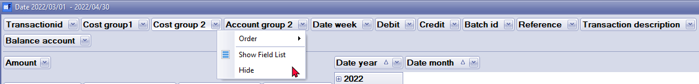
Order (sequence) of columns
You may select a Pivot grid field, right-click, and select the following options from the “Order” option on the context menu:
- Move to Beginning - Move to the first Pivot grid field.
- Move to End - Move to the last Pivot grid field.
- Move Left - Move the selected Pivot grid field before the previous Pivot grid field to the left.
- Move Right - Move the selected Pivot grid field after the next Pivot grid field to the right.
|
|
You may use your mouse to drag a selected Pivot grid field to the right or left to your required position. |

Filters
Right-click to access the "Show Field List" or the "Show Prefilter Dialog" options.
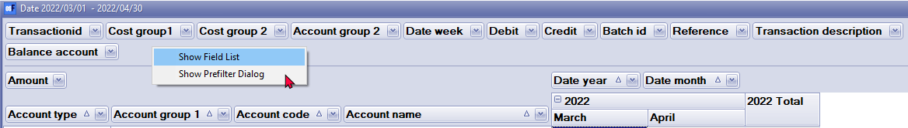
PivotGrid Field List
The “PivotGrid Field List” lists the available Pivot grid fields not displayed on the default Pivot table view. You select an available field on the list and add them to the four (4) areas (i.e. “Data Area”, “Filter Area”, “Column Area” or the “Row Area”) of the Pivot table.
Show Prefilter Dialog
The "Prefilter Dialog" allows you to create custom filters for the Pivot table.
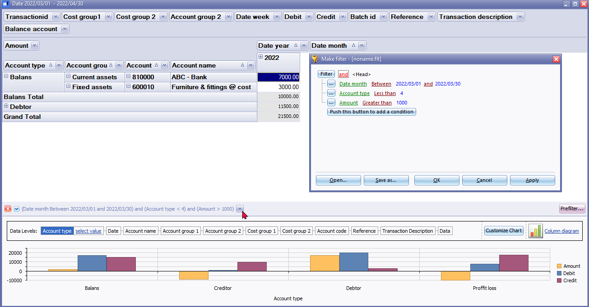
|
|
By default all data applicable to a column “Pivot grid field” is included in the initial launch of the Pivot table based on your report options. You may click on the filter icon of a selected “Pivot grid field” to remove the tick to exclude that specific data on the list from the Pivot table. |
Save custom filter files
To save a custom filter file:
- Once you have sorted or filtered your data with the “Make filter0” screen, click on the Save as... button. The “Save active filter as” screen will be displayed.
- Select a directory in which you wish to save the custom filter file.
- Enter a file name.
- Click on the Save button to save the Filter in a (*.flt) Filter File format. You may then at any later stage open the saved *.flt file.
Open custom filter files
To open a saved a custom filter file:
- Once you have sorted or filtered your data with the “Make filter” screen, click on the Open... button. The “Open saved filter as” screen will be displayed.
- Select a directory in which you have saved the custom filter file.
- Select a valid filter file.
- Click Open. The selected filter file's name will be displayed in the titlebar of the “Make filter” screen.
Conditions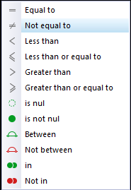
- Equal to - list or display all values which is the same as the specified value.
- Not equal to - list or display all values which is not the same as the specified value.
- Less than - list or display all values smaller than the specified value.
- Less than or equal to - list or display all values smaller or equal to the specified value.
- Greater than - list or display all values greater than the specified value.
- Greater than or equal to - list or display all values greater or equal to the specified value.
- is null - excludes any value entered, will not be listed or displayed.
- is not null - is not zero - any value which is not equal to zero will be listed or displayed.
- Between - Specify specific values, etc. to include only matching values.
- Not between - Specify specific values, etc. to exclude values.
- in - In a specified value.
- Not in - Not in a specified value.
|
|
If a Date for a column condition is selected, additional conditions will be available (i.e. is this month, is this year, is next 7 days, is next week, is next 14 days, is next two weeks, is next 30 days, is next month, is future, is this week, is yesterday, is today, is last 7 days, is last week, is last 14 days, is last two weeks, is last 30 days, is last month, is last year, is past, is this week, etc. |
Customise the graphs
Graph types
The default chart diagram is the “Column diagram”. You may select the one of the following diagrams to view the graph.
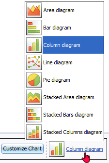
Series
By default, the “Amount” and “Debit” and “Credit” is displayed.
You may remove the tick of the series or add a tick to a series. For example, if you wish to see only the “Debit” and “Credit” amounts, leave these as ticked; and if you do not wish to view the “Amount”, remove the tick.
Sort by: select the options in the series to change the sequence in which the data in the graph will be displayed.
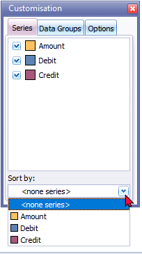
Data groups
Data groups is empty.
Options
You may change the default values for the “Legend, Title, Toolbox” and “Other (Value Hints)“ according to your requirements.
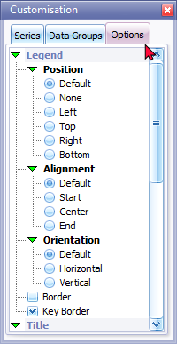